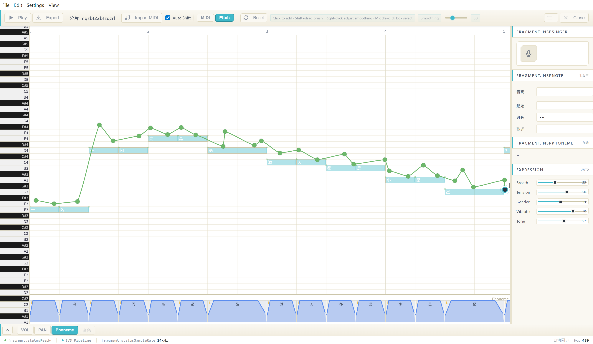

SoulX-Singer 神经合成
深度学习歌声合成模型，运行于 ONNX Runtime 之上。DirectML GPU 加速将声码器推理速度提升 6 倍，mel 频谱前端信噪比从 49.86 dB 提升到 83.54 dB。中英日三语跨语种合成，同一模型自由演唱多语言曲目。
6xGPU 加速比
83dBmel SNR
W16A32量化精度
SXSEditor 是一款开源的 AI 歌声合成（SVS）桌面应用——基于 SoulX-Singer 神经模型 × ONNX Runtime 推理 × DirectML GPU 加速，从 MIDI 音符与歌词到完整歌声，一个软件走完全部流程。
支持 Windows · macOS · Linux ｜ MIT 开源协议 ｜ 三语合成：中 · 英 · 日

深度学习歌声合成模型，运行于 ONNX Runtime 之上。DirectML GPU 加速将声码器推理速度提升 6 倍，mel 频谱前端信噪比从 49.86 dB 提升到 83.54 dB。中英日三语跨语种合成，同一模型自由演唱多语言曲目。
音符、歌词、音高曲线、音量/声像包络，以及音素级边界编辑。所画即所听，参数修改即时反馈。
输入歌词自动切分音节，中文拼音 / 英文音素 / 日文假名智能标注，逐字对齐到毫秒级。
FP32（推荐）/ FP16 / INT8 / INT8-NPU 多精度模型共存，切换无需重新下载。W16A32 量化在降低显存占用的同时接近 FP32 质量。
单一二进制支持 DirectML GPU、WebNN NPU/GPU 与 CPU 回退，自动选择最优后端。
basic_pitch 模型将现有音频转换为 MIDI 音符，可选同时提取 F0 音高曲线。
F0 / MIDI 自动提取